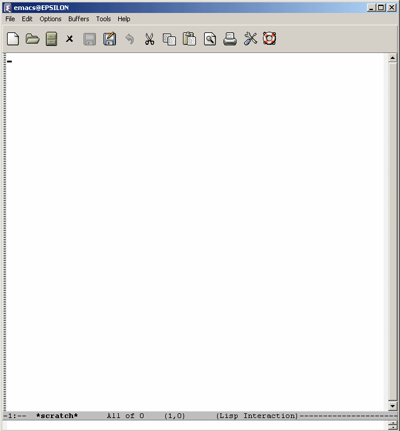

Tastaturmakroer i Emacs

Det ovenstående er en liten video som viser hvordan en oppgave kan utføres i GNU Emacs ved bruk av tastaturmakroer. Jeg har laget 20 identiske filer som jeg har plassert i katalogen D:\vcalendar. I videoen åpner jeg denne katalogen og definerer en makro som åpner filen under markøren, bruker et regulært uttrykk for å søke seg frem til LOCATION-feltet, kopierer de to første tegnene (som kan være kodet i quoted-printable, derfor et litt innfløkt uttrykk), søker seg frem til SUMMARY-feltet, går til slutten av linjen, setter inn et mellomrom, limer inn tegnene, lagrer filen, lukker bufferen og flytter markøren til neste fil. Jeg utfører så denne makroen på alle de resterende filene i katalogen, og åpner til slutt en av dem for å vise at den er forandret.
Merk at den ovenstående makroen forutsetter at hver fil bare inneholder én oppføring. Dersom filene inneholdt flere oppføringer, ville det ha vært nødvendig å definere to makroer: en som utfører arbeidet med å kopiere de to første tegnene i LOCATION-feltet, og en som åpner hver fil og «looper gjennom dem» med den første makroen. Dette er ikke veldig mye mer komplisert enn det som vises i videoen.
For øvrig har Emacs sine egne kommandoer for å håndtere quoted-printable, så i stedet for det lange regulære uttrykket jeg skriver inn for å ta høyde for quoted-printable-kodede tegn à la =F8 (som ikke forekommer så tidlig i LOCATION-feltet i eksemplet, så dette er bare teoretisk), kunne jeg ha konvertert fra quoted-printable til vanlig tekst, kopiert de to første tegnene, konvertert LOCATION-feltet tilbake, limt inn tegnene i SUMMARY-feltet og konvertert dem.
Ifølge folket på #emacs har Emacs hatt tastaturmakroer siden 1975.